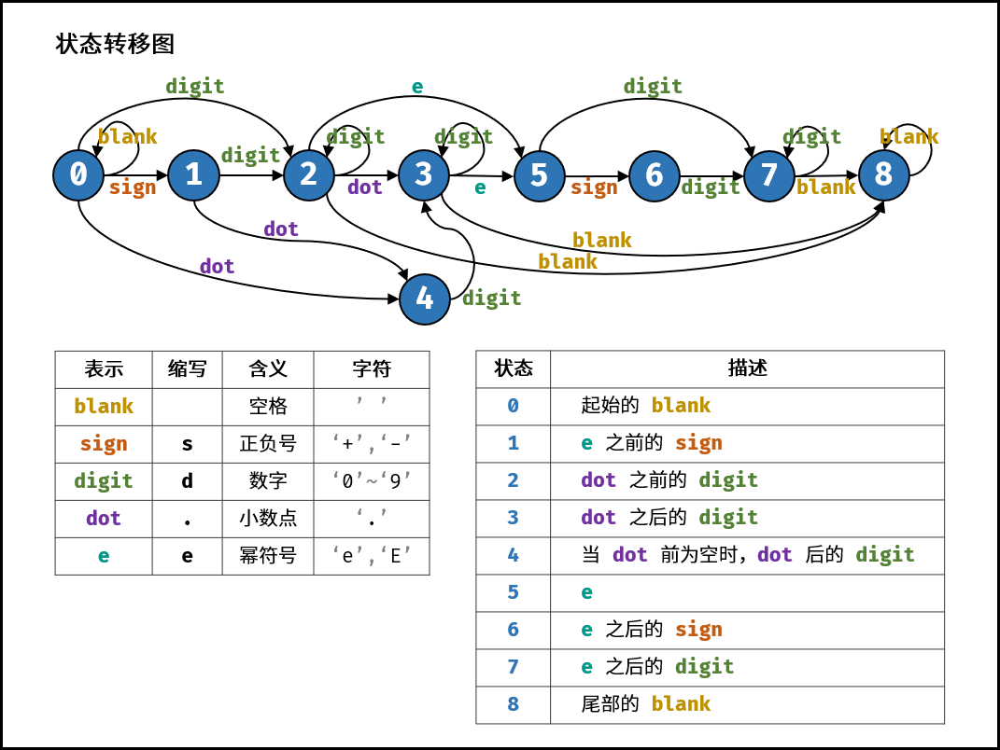

29、剑指 Offer 20. 表示数值的字符串
一、题目
剑指 Offer 20. 表示数值的字符串 难度中等
请实现一个函数用来判断字符串是否表示数值（包括整数和小数）。
数值（按顺序）可以分成以下几个部分：
- 若干空格
- 一个 小数 或者 整数
- （可选）一个
'e'或'E'，后面跟着一个 整数 - 若干空格
小数（按顺序）可以分成以下几个部分：
- （可选）一个符号字符（
'+'或'-'） - 下述格式之一：
- 至少一位数字，后面跟着一个点
'.' - 至少一位数字，后面跟着一个点
'.'，后面再跟着至少一位数字 - 一个点
'.'，后面跟着至少一位数字
- 至少一位数字，后面跟着一个点
整数（按顺序）可以分成以下几个部分：
- （可选）一个符号字符（
'+'或'-'） - 至少一位数字
部分数值列举如下：
["+100", "5e2", "-123", "3.1416", "-1E-16", "0123"]
部分非数值列举如下：
["12e", "1a3.14", "1.2.3", "+-5", "12e+5.4"]
示例 1：
输入：s = "0"
输出：true
示例 2：
输入：s = "e"
输出：false
示例 3：
输入：s = "."
输出：false
示例 4：
输入：s = " .1 "
输出：true
提示：
1 <= s.length <= 20s仅含英文字母（大写和小写），数字（0-9），加号'+'，减号'-'，空格' '或者点'.'。
二、解法
2.1、确定有限状态自动机（官方题解）
核心思路
预备知识
确定有限状态自动机（以下简称「自动机」）是一类计算模型。它包含一系列状态，这些状态中：
有一个特殊的状态，被称作「初始状态」。 还有一系列状态被称为「接受状态」，它们组成了一个特殊的集合。其中，一个状态可能既是「初始状态」，也是「接受状态」。 起初，这个自动机处于「初始状态」。随后，它顺序地读取字符串中的每一个字符，并根据当前状态和读入的字符，按照某个事先约定好的「转移规则」，从当前状态转移到下一个状态；当状态转移完成后，它就读取下一个字符。当字符串全部读取完毕后，如果自动机处于某个「接受状态」，则判定该字符串「被接受」；否则，判定该字符串「被拒绝」。
注意：如果输入的过程中某一步转移失败了，即不存在对应的「转移规则」，此时计算将提前中止。在这种情况下我们也判定该字符串「被拒绝」。
一个自动机，总能够回答某种形式的「对于给定的输入字符串 S，判断其是否满足条件 P」的问题。在本题中，条件 P 即为「构成合法的表示数值的字符串」。
自动机驱动的编程，可以被看做一种暴力枚举方法的延伸：它穷尽了在任何一种情况下，对应任何的输入，需要做的事情。
自动机在计算机科学领域有着广泛的应用。在算法领域，它与大名鼎鼎的字符串查找算法「KMP」算法有着密切的关联；在工程领域，它是实现「正则表达式」的基础。
问题描述
在 C++ 文档 中，描述了一个合法的数值字符串应当具有的格式。具体而言，它包含以下部分：
符号位，即 ++、-− 两种符号 整数部分，即由若干字符 0-90−9 组成的字符串 小数点 小数部分，其构成与整数部分相同 指数部分，其中包含开头的字符 \text{e}e（大写小写均可）、可选的符号位，和整数部分 相比于 C++ 文档而言，本题还有一点额外的不同，即允许字符串首末两端有一些额外的空格。
在上面描述的五个部分中，每个部分都不是必需的，但也受一些额外规则的制约，如：
如果符号位存在，其后面必须跟着数字或小数点。 小数点的前后两侧，至少有一侧是数字。
思路与算法
根据上面的描述，现在可以定义自动机的「状态集合」了。那么怎么挖掘出所有可能的状态呢？一个常用的技巧是，用「当前处理到字符串的哪个部分」当作状态的表述。根据这一技巧，不难挖掘出所有状态：
起始的空格 符号位 整数部分 左侧有整数的小数点 左侧无整数的小数点（根据前面的第二条额外规则，需要对左侧有无整数的两种小数点做区分） 小数部分 字符 e 指数部分的符号位 指数部分的整数部分 末尾的空格 下一步是找出「初始状态」和「接受状态」的集合。根据题意，「初始状态」应当为状态 1，而「接受状态」的集合则为状态 3、状态 4、状态 6、状态 9 以及状态 10。换言之，字符串的末尾要么是空格，要么是数字，要么是小数点，但前提是小数点的前面有数字。
最后，需要定义「转移规则」。结合数值字符串应当具备的格式，将自动机转移的过程以图解的方式表示出来：
{kind=link}
比较上图与「预备知识」一节中对自动机的描述，可以看出有一点不同：
我们没有单独地考虑每种字符，而是划分为若干类。由于全部 10 个数字字符彼此之间都等价，因此只需定义一种统一的「数字」类型即可。对于正负号也是同理。 在实际代码中，我们需要处理转移失败的情况。例如当位于状态 1（起始空格）时，没有对应字符 e 的状态。为了处理这种情况，我们可以创建一个特殊的拒绝状态。如果当前状态下没有对应读入字符的「转移规则」，我们就转移到这个特殊的拒绝状态。一旦自动机转移到这个特殊状态，我们就可以立即判定该字符串不「被接受」。
复杂度分析
时间复杂度：O(n)，其中 n 为字符串的长度。我们需要遍历字符串的每个字符，其中状态转移所需的时间复杂度为 O(1)。
空间复杂度：O(1)，只需要创建固定大小的状态转移表。
Code：
class Solution {
// 有限状态集合
enum State {
// 起始的空格
STATE_INITIAL,
// 整数部分符号位
STATE_INT_SIGN,
// 整数部分
STATE_INTEGER,
// 左侧有整数的小数点
STATE_POINT,
// 左侧无整数的小数点（根据前面的第二条额外规则，需要对左侧有无整数的两种小数点做区分）
STATE_POINT_WITHOUT_INT,
// 小数部分
STATE_FRACTION,
// 字符 e
STATE_EXP,
// 指数部分的符号位
STATE_EXP_SIGN,
// 指数部分的整数部分
STATE_EXP_NUMBER,
// 末尾的空格
STATE_END
}
// 字符类型集合
enum CharType {
// 数字
CHAR_NUMBER,
// 字符 e
CHAR_EXP,
// 小数点
CHAR_POINT,
// 正负号
CHAR_SIGN,
// 空格
CHAR_SPACE,
// 非法字符
CHAR_ILLEGAL
}
public boolean isNumber(String s) {
// 状态机
Map<State, Map<CharType, State>> transfer = new HashMap<State, Map<CharType, State>>();
// 空格（初始状态） 的所有可转移状态
Map<CharType, State> initialMap = new HashMap<CharType, State>() {{
// 空格
put(CharType.CHAR_SPACE, State.STATE_INITIAL);
// 整数
put(CharType.CHAR_NUMBER, State.STATE_INTEGER);
// 小数点
put(CharType.CHAR_POINT, State.STATE_POINT_WITHOUT_INT);
// 正负号
put(CharType.CHAR_SIGN, State.STATE_INT_SIGN);
}};
transfer.put(State.STATE_INITIAL, initialMap);
// 整数部分符号位 的所有可转移状态
Map<CharType, State> intSignMap = new HashMap<CharType, State>() {{
put(CharType.CHAR_NUMBER, State.STATE_INTEGER);
put(CharType.CHAR_POINT, State.STATE_POINT_WITHOUT_INT);
}};
transfer.put(State.STATE_INT_SIGN, intSignMap);
// 整数部分 的所有可转移状态
Map<CharType, State> integerMap = new HashMap<CharType, State>() {{
put(CharType.CHAR_NUMBER, State.STATE_INTEGER);
put(CharType.CHAR_EXP, State.STATE_EXP);
put(CharType.CHAR_POINT, State.STATE_POINT);
put(CharType.CHAR_SPACE, State.STATE_END);
}};
transfer.put(State.STATE_INTEGER, integerMap);
// 左侧有整数的小数点 的所有可转移状态
Map<CharType, State> pointMap = new HashMap<CharType, State>() {{
put(CharType.CHAR_NUMBER, State.STATE_FRACTION);
put(CharType.CHAR_EXP, State.STATE_EXP);
put(CharType.CHAR_SPACE, State.STATE_END);
}};
transfer.put(State.STATE_POINT, pointMap);
// 左侧无整数的小数点（根据前面的第二条额外规则，需要对左侧有无整数的两种小数点做区分) 的所有可转移状态
Map<CharType, State> pointWithoutIntMap = new HashMap<CharType, State>() {{
put(CharType.CHAR_NUMBER, State.STATE_FRACTION);
}};
transfer.put(State.STATE_POINT_WITHOUT_INT, pointWithoutIntMap);
// 小数部分
Map<CharType, State> fractionMap = new HashMap<CharType, State>() {{
put(CharType.CHAR_NUMBER, State.STATE_FRACTION);
put(CharType.CHAR_EXP, State.STATE_EXP);
put(CharType.CHAR_SPACE, State.STATE_END);
}};
transfer.put(State.STATE_FRACTION, fractionMap);
// 字符 e 的所有可转移状态
Map<CharType, State> expMap = new HashMap<CharType, State>() {{
put(CharType.CHAR_NUMBER, State.STATE_EXP_NUMBER);
put(CharType.CHAR_SIGN, State.STATE_EXP_SIGN);
}};
transfer.put(State.STATE_EXP, expMap);
// 指数部分的符号位 的所有可转移状态
Map<CharType, State> expSignMap = new HashMap<CharType, State>() {{
put(CharType.CHAR_NUMBER, State.STATE_EXP_NUMBER);
}};
transfer.put(State.STATE_EXP_SIGN, expSignMap);
// 指数部分的整数部分 的所有可转移状态
Map<CharType, State> expNumberMap = new HashMap<CharType, State>() {{
put(CharType.CHAR_NUMBER, State.STATE_EXP_NUMBER);
put(CharType.CHAR_SPACE, State.STATE_END);
}};
transfer.put(State.STATE_EXP_NUMBER, expNumberMap);
// 末尾的空格 的所有可转移状态
Map<CharType, State> endMap = new HashMap<CharType, State>() {{
put(CharType.CHAR_SPACE, State.STATE_END);
}};
transfer.put(State.STATE_END, endMap);
int length = s.length();
// 初始状态
State state = State.STATE_INITIAL;
// 循环处理每个字符, 模拟状态转移
for (int i = 0; i < length; i++) {
// 获取当前字符的类型
CharType type = toCharType(s.charAt(i));
if (!transfer.get(state).containsKey(type)) {
return false;
} else {
state = transfer.get(state).get(type);
}
}
return state == State.STATE_INTEGER || state == State.STATE_POINT || state == State.STATE_FRACTION || state == State.STATE_EXP_NUMBER || state == State.STATE_END;
}
// 获取字符的类型
public CharType toCharType(char ch) {
if (ch >= '0' && ch <= '9') {
return CharType.CHAR_NUMBER;
} else if (ch == 'e' || ch == 'E') {
return CharType.CHAR_EXP;
} else if (ch == '.') {
return CharType.CHAR_POINT;
} else if (ch == '+' || ch == '-') {
return CharType.CHAR_SIGN;
} else if (ch == ' ') {
return CharType.CHAR_SPACE;
} else {
return CharType.CHAR_ILLEGAL;
}
}
}
2.2、确定有限状态自动机（评论区）
核心思路
本题使用有限状态自动机。根据字符类型和合法数值的特点，先定义状态，再画出状态转移图，最后编写代码即可。
字符类型：
空格 「 」、数字「 0—9 」 、正负号 「 +− 」 、小数点 「 . 」 、幂符号 「 eE 」 。
状态定义：
按照字符串从左到右的顺序，定义以下 9 种状态。
- 开始的空格
- 幂符号前的正负号
- 小数点前的数字
- 小数点、小数点后的数字
- 当小数点前为空格时，小数点、小数点后的数字
- 幂符号
- 幂符号后的正负号
- 幂符号后的数字
- 结尾的空格
结束状态：
合法的结束状态有 2, 3, 7, 8 。
{kind=link}
复杂度分析
时间复杂度：其中 N 为字符串 s 的长度，判断需遍历字符串，每轮状态转移的使用 O(1) 时间。
空间复杂度：states 和 p 使用常数大小的额外空间。
Code：
class Solution {
public boolean isNumber(String s) {
HashMap[] states = {
new HashMap() {{ put(' ', 0); put('s', 1); put('d', 2); put('.', 4); }}, // 0. start with 'blank'
new HashMap() {{ put('d', 2); put('.', 4); }}, // 1. 'sign' before 'e'
new HashMap() {{ put('d', 2); put('.', 3); put('e', 5); put(' ', 8); }}, // 2. 'digit' before 'dot'
new HashMap() {{ put('d', 3); put('e', 5); put(' ', 8); }}, // 3. 'digit' after 'dot'
new HashMap() {{ put('d', 3); }}, // 4. 'digit' after 'dot' (‘blank’ before 'dot')
new HashMap() {{ put('s', 6); put('d', 7); }}, // 5. 'e'
new HashMap() {{ put('d', 7); }}, // 6. 'sign' after 'e'
new HashMap() {{ put('d', 7); put(' ', 8); }}, // 7. 'digit' after 'e'
new HashMap() {{ put(' ', 8); }} // 8. end with 'blank'
};
int p = 0;
char t;
for(char c : s.toCharArray()) {
if(c >= '0' && c <= '9') t = 'd'; // digit
else if(c == '+' || c == '-') t = 's'; // sign
else if(c == 'e' || c == 'E') t = 'e'; // e or E
else if(c == '.' || c == ' ') t = c; // dot, blank
else t = '?'; // unknown
if(!states[p].containsKey(t)) return false;
p = (int)states[p].get(t);
}
return p == 2 || p == 3 || p == 7 || p == 8;
}
}
2.3、常规解法
核心思路
什么有限状态自动机的我不太懂，常规解法可以做就不想搞这种可能只有这道题会用到的解法。
我首先想到的是判断否 false 而不是判断是 true，毕竟有这么多条件满足才能判断 true，但是只要有一个条件不满足就可以判断 false，最后代码的效率也还可以，那么接下来进入正题吧：
-
首先定义了四个flag，对应四种字符
- 是否有数字：hasNum
- 是否有e：hasE
- 是否有正负符号：hasSign
- 是否有点：hasDot
-
其余还定义了字符串长度 n 以及字符串索引 index
-
先处理一下开头的空格，index 相应的后移
-
然后进入循环，遍历字符串
- 如果当前字符 c 是数字：将 hasNum 置为 true ，index 往后移动一直到非数字或遍历到末尾位置；如果已遍历到末尾 ( index == n ) ，结束循环
- 如果当前字符 c 是 ’e’ 或 ‘E’ ：如果 e 已经出现或者当前 e 之前没有出现过数字，返回 fasle ；否则令 hasE = true ，并且将其他 3 个 flag 全部置为 false ，因为要开始遍历 e 后面的新数字了
- 如果当前字符 c 是 + 或-：如果已经出现过 + 或 - 或者已经出现过数字或者已经出现过 ‘.’ ，返回 flase ；否则令 hasSign = true
- 如果当前字符 c 是 ‘.’ ：如果已经出现过 ‘.’ 或者已经出现过 ’e’ 或 ‘E’ ，返回 false ；否则令 hasDot = true
- 如果当前字符 c 是 ’ ’ ：结束循环，因为可能是末尾的空格了，但也有可能是字符串中间的空格，在循环外继续处理
- 如果当前字符 c 是除了上面 5 种情况以外的其他字符，直接返回 false
-
处理空格，index 相应的后移
-
如果当前索引 index 与字符串长度相等，说明遍历到了末尾，但是还要满足 hasNum 为 true 才可以最终返回 true ，因为如果字符串里全是符号没有数字的话是不行的，而且 e 后面没有数字也是不行的，但是没有符号是可以的，所以 4 个 flag 里只要判断一下 hasNum 就行；所以最后返回的是 hasNum && index == n
-
如果字符串中间有空格，按以上思路是无法遍历到末尾的，index 不会与 n 相等，返回的就是 false
复杂度分析
时间复杂度：O(n)
空间复杂度：O(1)
Code：
class Solution {
public boolean isNumber(String s) {
int n = s.length();
int index = 0;
boolean hasNum = false, hasE = false;
boolean hasSign = false, hasDot = false;
while(index < n && s.charAt(index) == ' ')
index++;
while(index < n){
while(index < n && s.charAt(index) >= '0' && s.charAt(index) <= '9'){
index++;
hasNum = true;
}
if(index == n){
break;
}
char c = s.charAt(index);
if(c == 'e' || c == 'E'){
if(hasE || !hasNum){
return false;
}
hasE = true;
hasNum = false; hasSign = false; hasDot = false;
}else if(c == '+' || c == '-'){
if(hasSign || hasNum || hasDot){
return false;
}
hasSign = true;
}else if(c == '.'){
if(hasDot || hasE){
return false;
}
hasDot = true;
}else if(c == ' '){
break;
}else{
return false;
}
index++;
}
while(index < n && s.charAt(index) == ' ')
index++;
return hasNum && index == n;
}
}